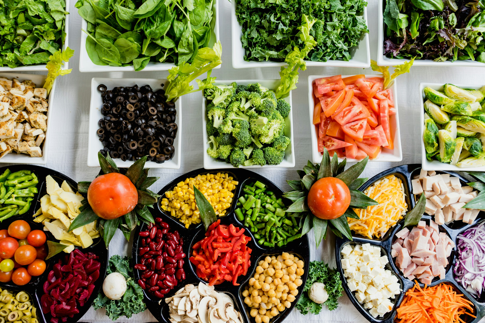
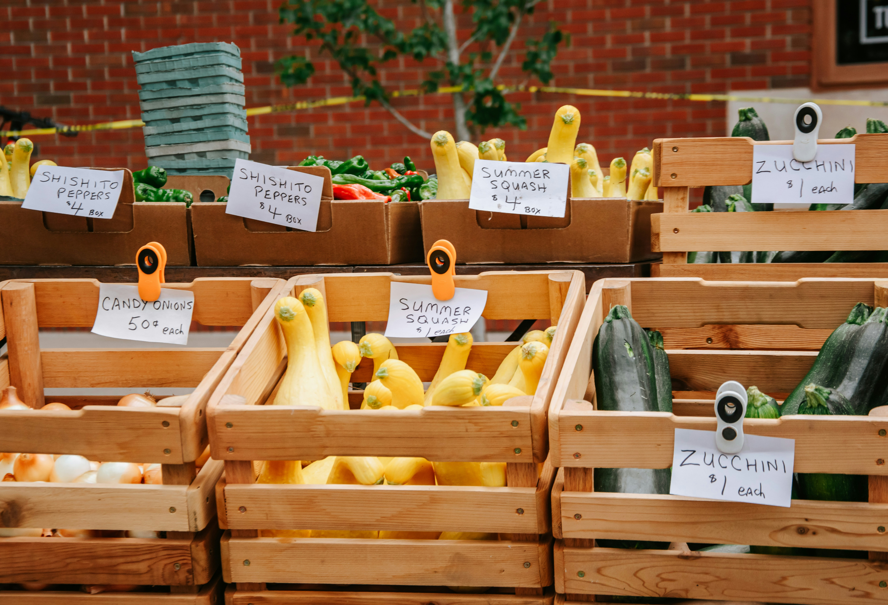
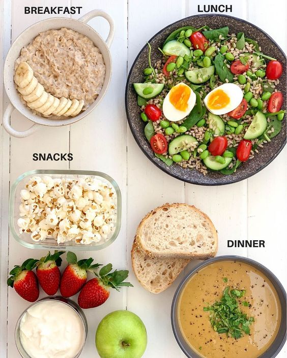
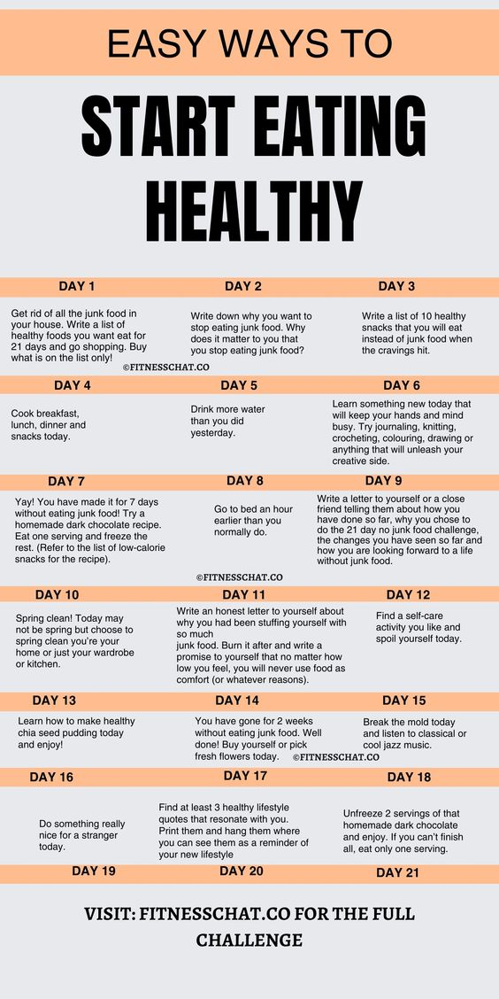
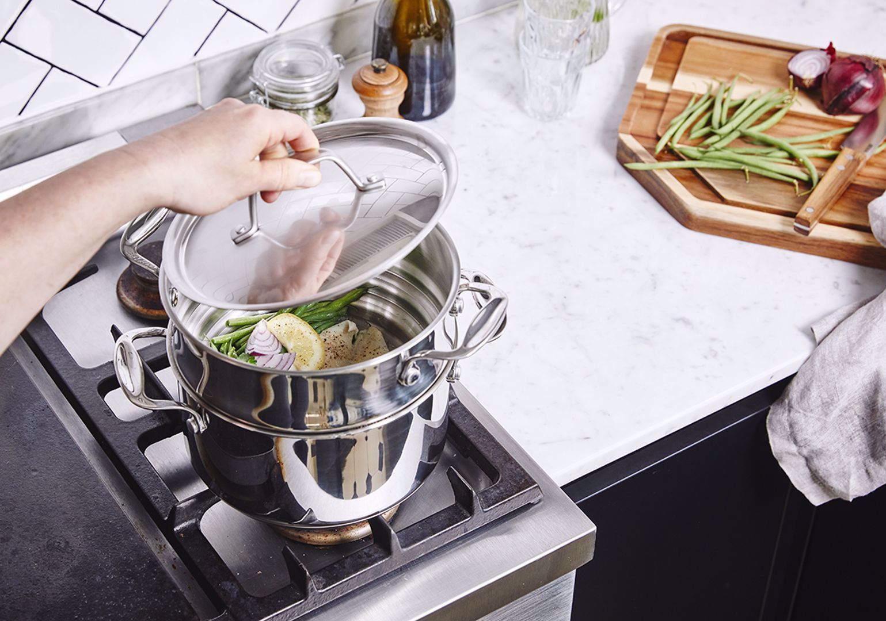

Organic Food
organic food, fresh or processed food produced by organic farming methods. Organic food is grown without the use of synthetic chemicals, such as human-made pesticides and fertilizers, and does not contain genetically modified organisms (GMOs). Organic foods include fresh produce, meats, and dairy products as well as processed foods such as crackers, drinks, and frozen meals. The market for organic food has grown significantly since the late 20th century, becoming a multibillion dollar industry with distinct production, processing, distribution, and retail systems.
As consumers increasingly prioritize health, sustainability, and ethical consumption, the demand for organic food continues to grow. By supporting organic agriculture, individuals can nourish their bodies with wholesome, nutrient-rich foods, protect the environment, and promote ethical farming practices that benefit both people and the planet. Whether through small changes in purchasing habits or advocating for policy changes that support organic farming, each of us has the power to make a positive impact on the future of food and agriculture.
Health Benefits
Reduced Chemical Exposure: Organic farming practices minimize exposure to harmful synthetic chemicals, pesticides, and fertilizers, potentially lowering the risk of pesticide residues in food and associated health concerns.
Nutrient Density: Studies suggest that organic fruits, vegetables, and grains may contain higher levels of certain vitamins, minerals, and antioxidants compared to their conventionally grown counterparts, contributing to overall nutritional quality.
GMO-Free: Organic certification prohibits the use of genetically modified organisms (GMOs), offering consumers peace of mind regarding the genetic integrity of their food.
Meal Planning

In today's fast-paced world, finding time to prepare nutritious meals can feel like a daunting task. However, with a well-thought-out meal planning strategy, you can simplify your life, save money, and nourish your body with wholesome foods. In this article, we explore the importance of meal planning, practical tips for getting started, and how to create delicious, balanced meals that support your health and well-being.
Benefits of Meal Planning
Time-Saving: Meal planning eliminates the need for last-minute trips to the grocery store or deciding what to cook on the fly, saving you time and reducing stress during busy weekdays.
Cost-Effective: By planning your meals in advance, you can make strategic use of ingredients, reduce food waste, and stick to a budget, ultimately saving money on groceries.
Healthier Choices: With a meal plan in place, you're more likely to make nutritious food choices and avoid the temptation of unhealthy convenience foods or takeout options.
Practical Meal Planning Tips
Plan Ahead: Set aside time each week to plan your meals, create a shopping list, and prep ingredients in advance, such as washing and chopping vegetables or cooking grains and proteins.
Batch Cooking: Cook large batches of staple ingredients like grains, beans, and proteins to use in multiple meals throughout the week, saving time and streamlining meal preparation.
Mix and Match: Embrace flexibility in your meal plan by mixing and matching components to create a variety of meals, such as grain bowls, salads, stir-fries, and soups.
Healthy meal planning is a powerful tool for improving your diet, saving time and money, and supporting overall well-being. By taking a proactive approach to meal planning and prioritizing nutritious, balanced meals, you can fuel your body with the nutrients it needs to thrive, while also enjoying delicious, satisfying food that nourishes both body and soul.
Cooking Techniques
Cooking is not only an art but also a science, and the techniques you use in the kitchen can greatly impact the nutritional quality of your meals. By employing healthy cooking techniques, you can maximize flavor, texture, and nutrient retention while minimizing added fats, sugars, and calories. In this article, we explore a variety of cooking methods that promote wellness, from steaming and grilling to roasting and sautéing, empowering you to create delicious, nutrient-rich meals that support your health and vitality
Healthy cooking is all about finding balance and enjoying delicious, nourishing meals that support your well-being. By incorporating these healthy cooking techniques into your culinary repertoire, you can create flavorful, nutrient-rich dishes that delight your taste buds and promote optimal health for you and your loved ones. So fire up the grill, preheat the oven, and get ready to savor the goodness of wholesome, home-cooked meals that nourish body, mind, and soul
Steaming
Retains Nutrients: Steaming preserves the natural flavors and nutrients of foods by cooking them gently in their own steam, without the need for added fats or oils.
Versatility: From vegetables and seafood to grains and dumplings, steaming is a versatile cooking method that can be used for a wide range of ingredients.
Quick and Easy: Steaming is a quick and fuss-free cooking technique that requires minimal preparation and cleanup, making it ideal for busy weeknights.
Grilling
Intensifies Flavor: Grilling imparts a delicious smoky flavor to foods, enhancing their taste without the need for excessive seasoning or added fats.
Lower Fat Content: Grilling allows excess fat to drip away from meats and poultry, resulting in leaner, healthier dishes.
Adds Variety: From vegetables and fruits to lean proteins like chicken, fish, and tofu, grilling offers endless possibilities for creating nutritious, flavorful meals.
In today's fast-paced world, prioritizing health and well-being is more important than ever, and one of the most impactful ways to do so is through healthy eating. By embracing a diet rich in whole, nutrient-dense foods and incorporating balanced meals into your daily routine, you can nourish your body, support your immune system, and promote long-term vitality. Remember, healthy eating doesn't have to be complicated or restrictive. By focusing on whole foods, including plenty of fruits, vegetables, lean proteins, whole grains, and healthy fats, you can create meals that are not only delicious but also packed with essential nutrients and beneficial antioxidants